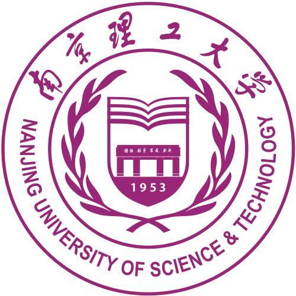
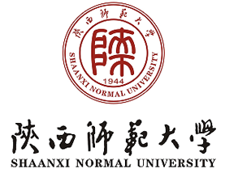
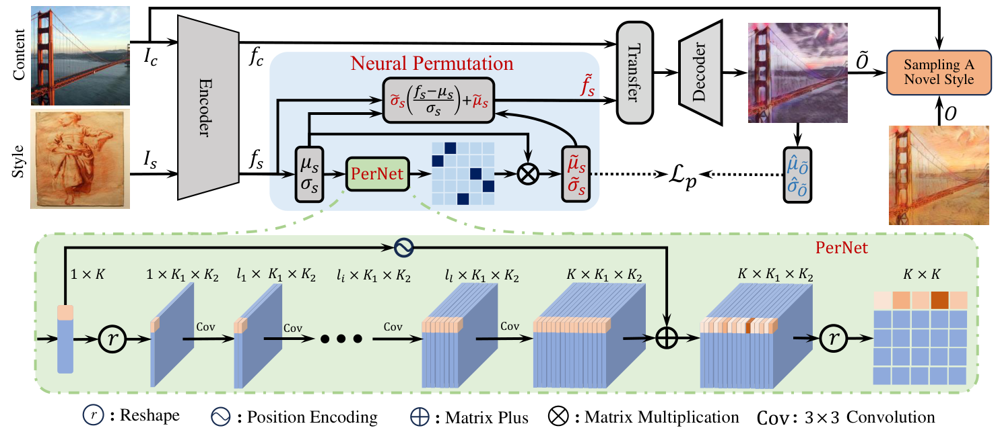

南京理工大学Nanjing University of Science and Technology
计算机科学与工程学院
计算机科学与技术 · 硕士
School of Computer Science and Engineering
M.S. in Computer Science and Technology
你好，我是李世民。目前就职于科大讯飞 AI 研究院，主要从事大语言模型训练、对话语义优化与生成式人工智能相关工作。我于 2025 年获得南京理工大学计算机科学与技术硕士学位。
我的研究兴趣包括大语言模型、图像生成与风格迁移、模型推理优化，以及自然语言交互。欢迎通过邮件与我交流。
Hello, I am Shimin Li. I currently work at the AI Research Institute of iFLYTEK, focusing on large language model training, conversational semantic optimization, and generative AI. I received my M.S. degree in Computer Science and Technology from Nanjing University of Science and Technology in 2025.
My research interests include large language models, image generation and style transfer, model inference optimization, and natural language interaction. Feel free to contact me via email.

计算机科学与工程学院
计算机科学与技术 · 硕士
School of Computer Science and Engineering
M.S. in Computer Science and Technology

计算机科学与技术学院
计算机科学与技术 · 学士
School of Computer Science and Technology
B.S. in Computer Science and Technology
AI 算法工程师
负责大语言模型训练与对话语义优化，参与指令数据构建、日程信息提取及模型情感表达等工作。
AI Algorithm Engineer
Working on large language model training and conversational semantic optimization, including instruction data construction, schedule information extraction, and emotional expression modeling.
全国研究生数学建模竞赛（华为杯）China Postgraduate Mathematical Contest in Modeling (Huawei Cup)
全国大学生算法设计与编程挑战赛春季赛、秋季赛National College Student Algorithm Design and Programming Challenge
江苏省研究生数学建模竞赛Jiangsu Postgraduate Mathematical Contest in Modeling
第五届中国“互联网+”大学生创新创业大赛5th China College Students' Internet Plus Innovation and Entrepreneurship Competition
“算能杯”Stable Diffusion 图像提示语优化专项赛SOPHGO Cup: Stable Diffusion Prompt Optimization Track
优秀研究生、研究生一等奖学金与二等奖学金Outstanding Graduate Student; First- and Second-Class Graduate Scholarships
期刊论文 · 图像风格迁移Journal Article · Image Style Transfer
Knowledge-Based Systems, Vol. 330, Article 114368, 2025. 中科院 SCI 一区 TOP。CAS Q1, Top Journal.
传统风格迁移通常只能复现给定画风，难以产生真正新颖的艺术表达。本文提出 CSFer：利用神经置换网络 PerNet 重排单幅风格图像的特征，生成多样的新风格，再从新颖性、惊喜度与美学价值三个维度筛选更具创造力的结果。
Traditional style transfer mainly imitates a given style and struggles to create genuinely novel artistic expressions. CSFer uses a Neural Permutation Network (PerNet) to rearrange features from a single style image, generate diverse new styles, and select creative results by novelty, surprise, and aesthetic value.

查看原图Full size ↗中国发明专利，申请号：202411878042。Chinese Invention Patent, Application No. 202411878042.
国家级大学生创新训练项目 · 第一主持人
结合虚拟现实、3D 建模、腾讯云 ECS 与 CDN，完成 B/S 架构的校园展示和导览系统。项目获评优秀大学生创新创业训练项目，并取得软件著作权 2020SR1035791。
National College Student Innovation Training Program · Project Lead
Developed a browser-based campus visualization and navigation system using virtual reality, 3D modeling, Tencent Cloud ECS, and CDN. The project received an Outstanding Project award and software copyright No. 2020SR1035791.
工作和研究之外，我喜欢通过运动与游戏放松自己。Outside work and research, I enjoy staying active through sports and relaxing with games.